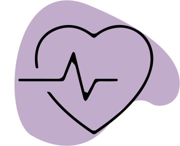
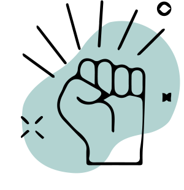

EDUCATION
 If we need to address healthcare, poverty, population control, unemployment and human rights, there's no better way to start than providing education to children in need. Education not only empowers children to have a secure future but also helps them grow up as responsible national and global citizens. The Right to Education (RTE) Act which came into force in 2010 made education free and compulsory for all children in the age group of 6-14 years. But even a decade later, the learning curve has not been steady for many children in the country. The socio-economic conditions of parents and lack of proper learning in schools are hindrances which prevent many children from having education.
If we need to address healthcare, poverty, population control, unemployment and human rights, there's no better way to start than providing education to children in need. Education not only empowers children to have a secure future but also helps them grow up as responsible national and global citizens. The Right to Education (RTE) Act which came into force in 2010 made education free and compulsory for all children in the age group of 6-14 years. But even a decade later, the learning curve has not been steady for many children in the country. The socio-economic conditions of parents and lack of proper learning in schools are hindrances which prevent many children from having education.
Mission Education works with children (3-18 years) living in difficult circumstances, children from poor families, differently abled children, disaster-struck children, abandoned and street children, and children living in tribal belts, remote villages and hard to reach areas.
HEALTHCARE

With a population of 140 Billion, last mile delivery of healthcare in our country has always been a challenge. Nearly 72% of the population lives in rural areas and has access to only about 25% of the healthcare infrastructure. On the other hand, urban slum dwellers are mostly a migrated population for whom livelihood challenges are overwhelming and health lies at the bottom of the pyramid.
Following a two pronged approach, the programme provides curative as well as preventive services, addressing the gaps in availability, accessibility and affordability of healthcare.
WOMEN EMPOWERMENT

women empowerment programme Swabhiman, initiated in 2005, reaches out to marginalized and socially-excluded women with interventions in nutrition, healthcare, and livelihood. The programme capacitates women through innovative community practices, empowering them to seek healthcare and bring sustainable changes in the community, while also supporting them to become aware, skilled, and financially independent. Swabhiman also actively works to create a gender equal society, actively engaging men, and boys to participate in the process of women empowerment.